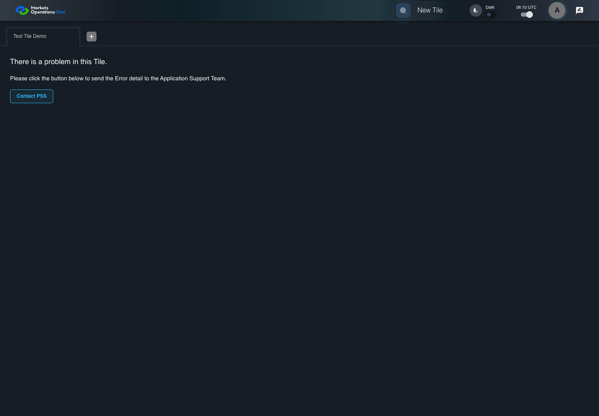

UX-042 actual support email link
FAIL · application/run-050/ux-042-actual-support-email-link-ba2c0cba4b35-attempt-1 · ACTUAL_APPLICATION_LOCAL_SERVICES
Actual React snackbar sanitization and error fallback. Controlled service errors and SystemJS exception. A click recorder captures mailto links and prevents external mail-client launch. No email is sent.
2026-10-22T06:10:36.071Z to 2026-10-22T06:10:39.008Z
Assertions and result · Artifact manifest · Exact run inputs and source hashes
Result SHA-256:d7af14465c2e2c6c80433c5540e5452095f1b5465ef39260ceac1ff826279106Retained failure details
[
{
"message": "Error: \u001b[2mexpect(\u001b[22m\u001b[31mreceived\u001b[39m\u001b[2m).\u001b[22mtoEqual\u001b[2m(\u001b[22m\u001b[32mexpected\u001b[39m\u001b[2m) // deep equality\u001b[22m\n\n\u001b[32m- Expected - 1\u001b[39m\n\u001b[31m+ Received + 1\u001b[39m\n\n\u001b[2m Array [\u001b[22m\n\u001b[32m- \"line1 & line2 # ?\",\u001b[39m\n\u001b[31m+ \"line1 \",\u001b[39m\n\u001b[2m ]\u001b[22m",
"stack": "Error: \u001b[2mexpect(\u001b[22m\u001b[31mreceived\u001b[39m\u001b[2m).\u001b[22mtoEqual\u001b[2m(\u001b[22m\u001b[32mexpected\u001b[39m\u001b[2m) // deep equality\u001b[22m\n\n\u001b[32m- Expected - 1\u001b[39m\n\u001b[31m+ Received + 1\u001b[39m\n\n\u001b[2m Array [\u001b[22m\n\u001b[32m- \"line1 & line2 # ?\",\u001b[39m\n\u001b[31m+ \"line1 \",\u001b[39m\n\u001b[2m ]\u001b[22m\n at /Users/lushevol/code/github/ratan-release-impact/workbench/e2e/audit-specs/notifications-expanded.spec.ts:70:111\n at AuditCapture.step (/Users/lushevol/code/github/ratan-release-impact/workbench/e2e/support/audit-fixture.ts:94:21)\n at /Users/lushevol/code/github/ratan-release-impact/workbench/e2e/audit-specs/notifications-expanded.spec.ts:70:13",
"location": {
"file": "/Users/lushevol/code/github/ratan-release-impact/workbench/e2e/audit-specs/notifications-expanded.spec.ts",
"column": 111,
"line": 70
},
"snippet": " 68 | else expect(url.pathname).toBe('support@example.test');\n 69 | });\n> 70 | if(n===42)await audit.step(4,async()=>{const url=new URL(captured!);expect(url.searchParams.getAll('body')).toEqual([stack]);});\n | ^\n 71 | });\n 72 | }\n 73 |"
}
]Machine observations
- captured-mailto.json
3c63c2d381f327641d7f5daad6ebe107d301e252e1d277f0fa71af55b145d75b
Screenshot capture: CAPTURED. Named frames: 5.
Step screenshot bindings: COMPLETE. 4/4 canonical steps have execution screenshots.
Bindings measure structural coverage only. They do not establish screenshot content quality or relevance.
Screenshot content review: NOT_REVIEWED. Recorded context: 0/5 frames. Identical image bytes: 3 repeated frames. Recorded context does not establish human visual review.
Canonical step timeline
Given USER-A has stack text "line1 & line2 # ?" and fixture recipient "support@example.test"
Execution: PASSED.
1. step-01 Visible state after step 1: Given USER-A has stack text "line1 & line2 # ?" and fixture recipient "support@example.test"
2026-10-22T06:10:38.215Z · 1440×1000
Step: /Users/lushevol/code/github/ratan-release-impact/workbench/tasks/ui-test-coverage-20261022/test-cases.md:13599
SHA-256:cfd0ce0a64116cc64848c9bd075b4dd6599952982081f6885b2064517a8c97b0When USER-A clicks the link labelled "Contact PSS" in the tile error panel on the Home page
Execution: PASSED.
2. step-02 Visible state after step 2: When USER-A clicks the link labelled "Contact PSS" in the tile error panel on the Home page
2026-10-22T06:10:38.343Z · 1440×1000
Step: /Users/lushevol/code/github/ratan-release-impact/workbench/tasks/ui-test-coverage-20261022/test-cases.md:13600
SHA-256:d2a6a46a1a6b13d7b01edfd1ec9e7a938a0abc3ef8c9ef035d90f03c41592809Then The captured email recipient equals "support@example.test"
Execution: PASSED.
3. step-03 Visible state after step 3: Then The captured email recipient equals "support@example.test"
2026-10-22T06:10:38.405Z · 1440×1000
Step: /Users/lushevol/code/github/ratan-release-impact/workbench/tasks/ui-test-coverage-20261022/test-cases.md:13601
SHA-256:d2a6a46a1a6b13d7b01edfd1ec9e7a938a0abc3ef8c9ef035d90f03c41592809Image bytes match frame 2. An unchanged image can be valid for consecutive assertions. This match does not establish correct step content.
And The decoded draft contains one body value equal to "line1 & line2 # ?"
Execution: FAILED.
4. step-04-failure Visible state when step 4 failed. Later steps did not execute.
2026-10-22T06:10:38.469Z · 1440×1000
Step: /Users/lushevol/code/github/ratan-release-impact/workbench/tasks/ui-test-coverage-20261022/test-cases.md:13602
SHA-256:d2a6a46a1a6b13d7b01edfd1ec9e7a938a0abc3ef8c9ef035d90f03c41592809Image bytes match frame 3. An unchanged image can be valid for consecutive assertions. This match does not establish correct step content.
Additional named frames

The visible state when the test failed.
2026-10-22T06:10:38.605Z · 1440×1000Step: Test source: /Users/lushevol/code/github/ratan-release-impact/workbench/e2e/audit-specs/notifications-expanded.spec.ts:49
SHA-256:
d2a6a46a1a6b13d7b01edfd1ec9e7a938a0abc3ef8c9ef035d90f03c41592809Image bytes match frame 4. An unchanged image can be valid for consecutive assertions. This match does not establish correct step content.
Screenshots establish visible state only. Assertions and traces support functional claims.